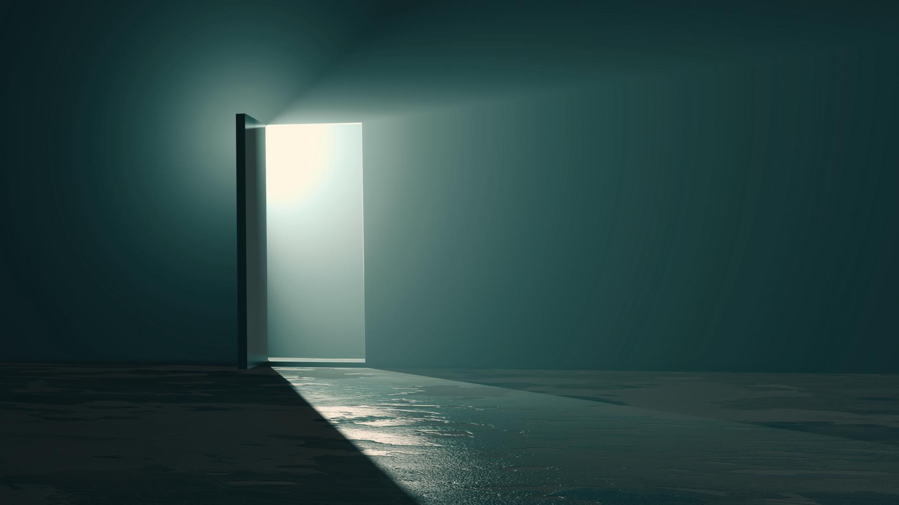

You spot an open door at the end of a hallway leading back to the real world. You get this feeling that once you leave you won't be able to come back. The thought of staying behind to play with your friends forever in this blissful paradise crosses your mind. You think to yourself "it's better than what's outside". What will you do?

Accept reality and leave
Go back to your friends